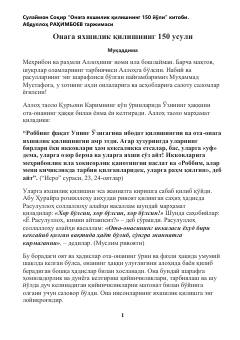

OYOnaga hurmat ko'rsatish va yaxshilik qilishning 150 ta amaliy usuli.
Mazkur kitobda onaga har xil vaziyat va holatlarda yaxshilik qilishning 150 xil amaliy usuli va yo'llari bayon etilgan. Asar farzandlarning ota-ona oldidagi burchlarini bajarishi, ularning roziligini olish va duosiga erishishida muhim qo'llanma bo'lib xizmat qiladi.